B Making graphs in R with ggplot2
B.1 Components of a plot
In this chapter, we discuss the basics of making figures with with the ggplot2 package in R (part of the tidyverse. The ggplot2 package assembles a graph from several components. The important components are:
- Data: You should have the data going into a plot organized into a data frame, where each row is an observation and each column is a different variable. This is called "tidy data;" we'll talk more about it later.
- Aesthetics: Which variables (columns) in the data connect to visual components of the plot? E.g., what goes on the X & Y axes, what does color mean, etc?
- Scales: How do your aesthetics visually appear? For example, if your aesthetics say that "Mass" is represented by color, a scale would say what colors those actually are.
- Geometry: What's actually drawn on your graph (e.g., points, lines, bars, etc)
- Facets: If you're splitting your figure into multiple panels, what data is informing that?
Let's look at an example:
# Load packages & data
library(tidyverse)
lizards <- read_csv("example_data/anoles.csv")
# If this throws an error, see Appendix A for how to download it.base_plot <-
ggplot(data = lizards) + # Data: sets up a plot around lizards
aes(x = SVL, y = Tail) + # Aesthetics: Connects columns of lizards to x and y
geom_point() # Geometry: we're using points
# Scales aren't listed, so they're using default values
base_plot # show results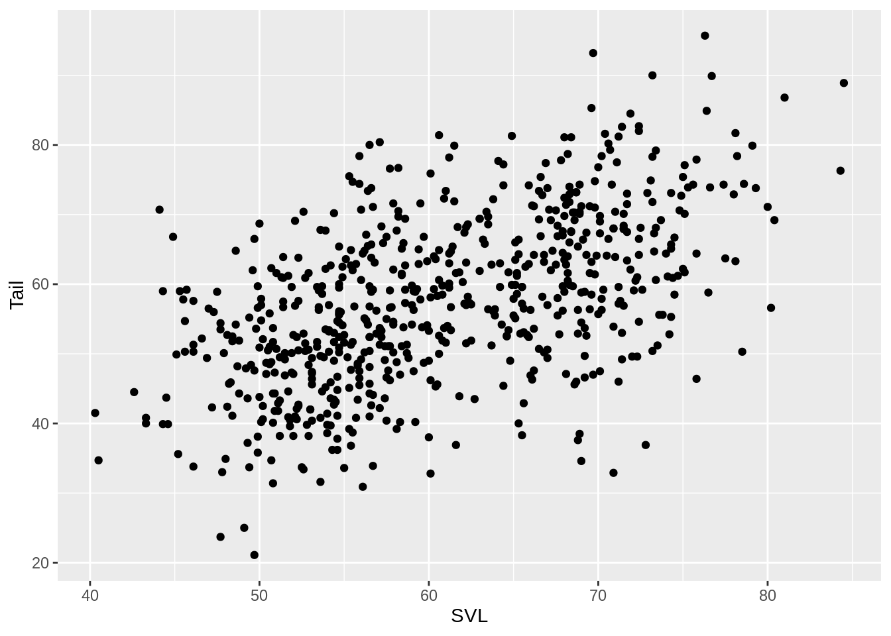
This is a functional plot, but it doesn't look much like a scientific figure. One quick option to change some of the default values is to use a theme. For this class, I'd like everyone to use the cowplot theme. Setting the theme will apply until you restart R.
# Include these two lines after loading tidyverse/ggplot2
# at the top of each script
library(cowplot)
theme_set(theme_cowplot())
# Now view the plot again, and see the results
base_plot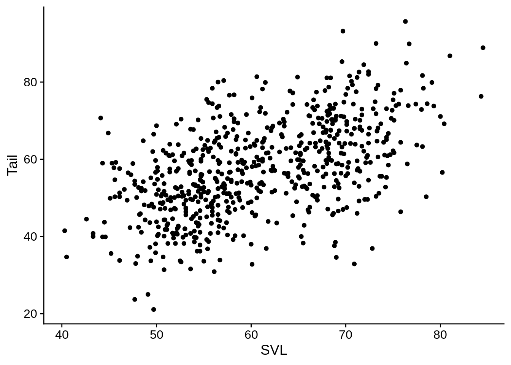
B.2 Aesthetics and scales
Aesthetics connect a column of data to a visual representation on the plot. For example, x and y are aesthetics that correspond to axis positions.
B.2.1 Color
Color is a commonly use aesthetic; let's add it to our base_plot.
# Connect the color aesthetic with the Color_morph column in the data
base_plot + aes(color = Color_morph) # This is a discrete color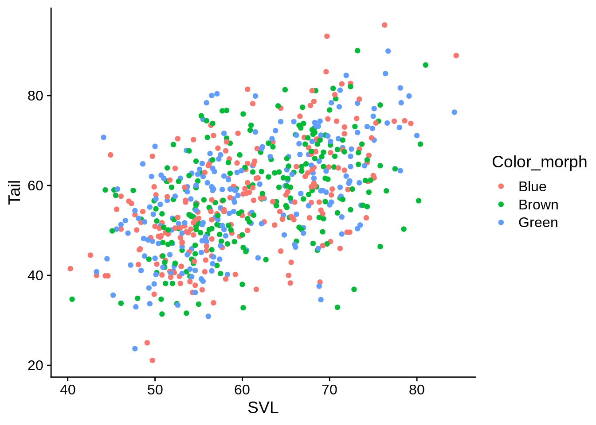
# Connect the color aesthetic with the Limb column in the data
base_plot + aes(color = Limb) # This is a continuous color
These aren't particularly great color defaults; we can use scales to change them. The viridis color scale is a good default option, since it's generally colorblind friendly and isn't terrible when printed in black & white.
base_plot + aes(color = Color_morph) +
scale_color_viridis_d() # uses the "Viridis" colors, discrete scale
base_plot + aes(color = Limb) +
scale_color_viridis_c() # uses the "Viridis" colors, discrete scale
You can also define your own colors for discrete variables:
my_morph_colors = c("#a06f00", "#004368", "#e0a1c4") # Color Hex codes; if you're unfamiliar, google it.
base_plot + aes(color = Color_morph) +
scale_color_manual(values = my_morph_colors) 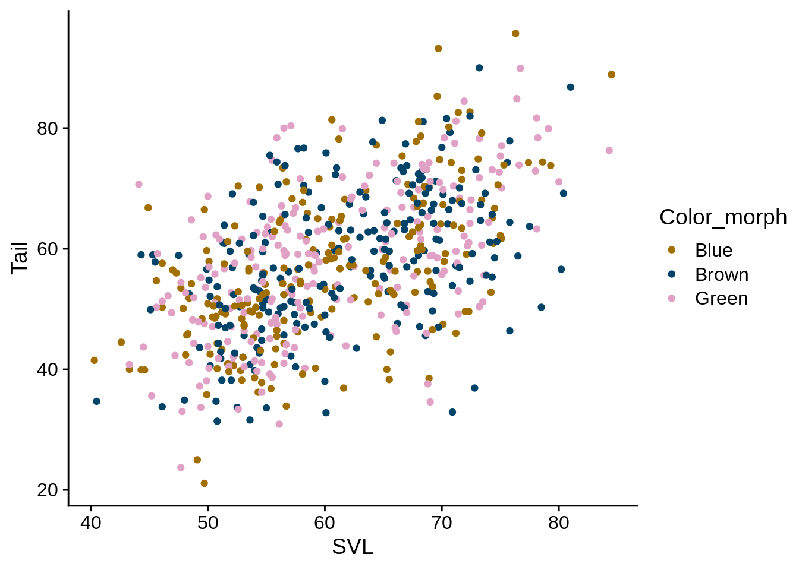
B.2.2 Shape
Shape only works for discrete variables
base_plot + aes(shape = Color_morph) 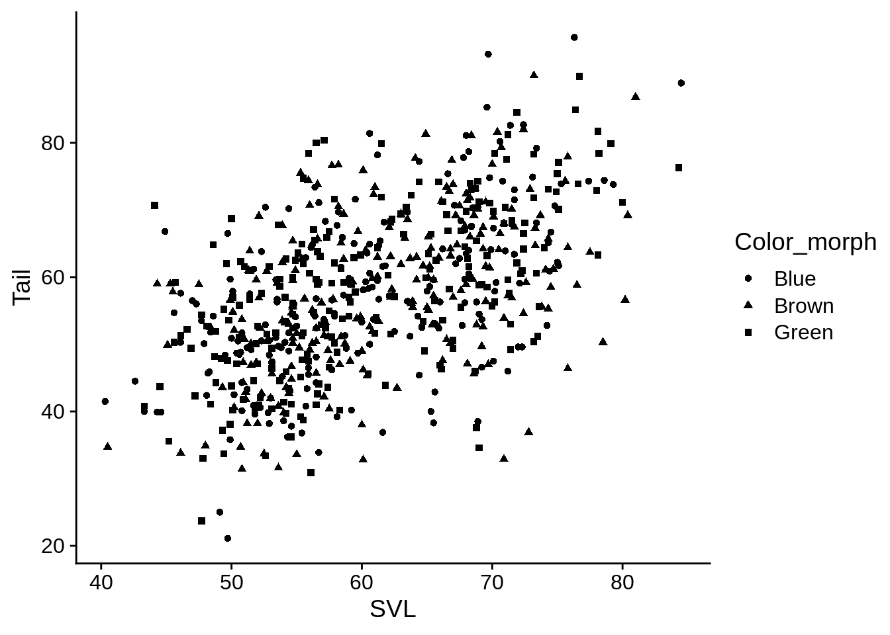
base_plot + aes(shape = Color_morph) +
scale_shape(solid = FALSE)
If you want to set manual shapes, look at ?pch to see which the options.
B.2.3 Size
base_plot + aes(size = Limb)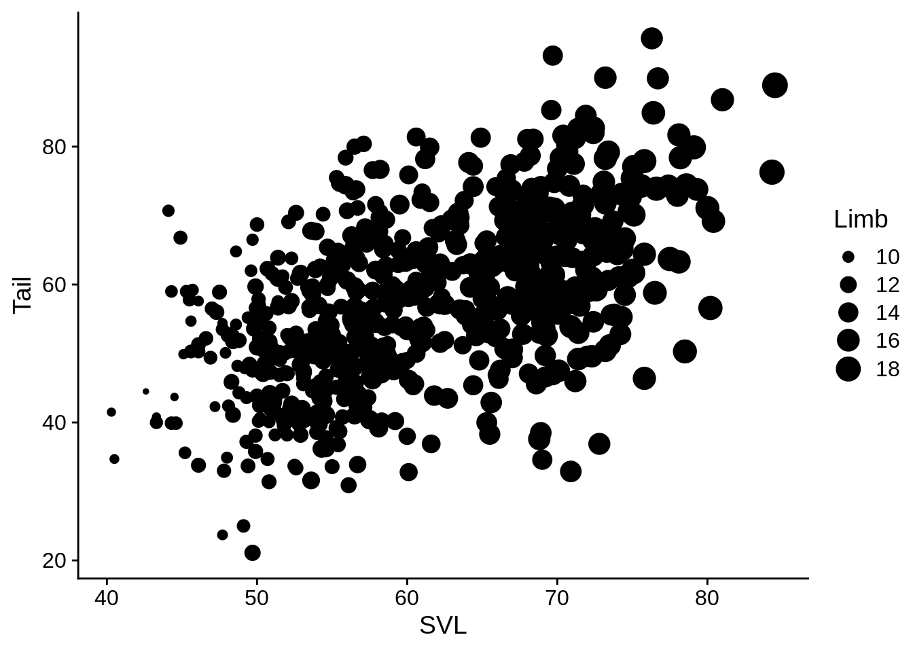 This is kind of a mess in its current state. Let's fix that.
B.2.4 Fixed aesthetics
You can define an aesthetic value as a constant within a geom_* call, and it will refer to that literal value instead of a data column.
# Note that I'm including the aes() term with ggplot() instead
# of adding it; these are equivalent
ggplot(data = lizards, aes(x = SVL, y = Tail, size = Limb)) +
# Define a default color & shape for points
geom_point(color = "cornflowerblue", shape = 1)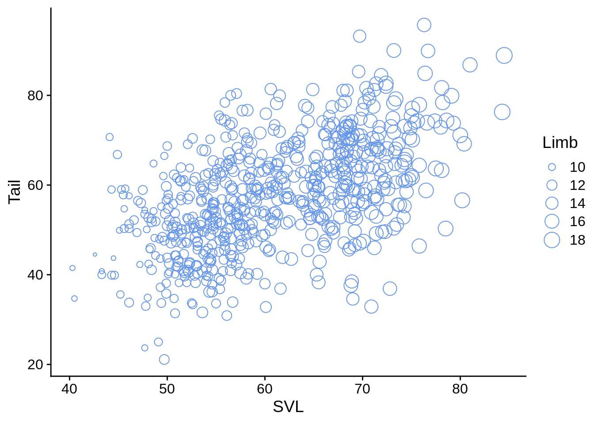
This makes the previous cloud of points a bit easier to separate.
B.2.5 Combining aesthetics
Aesthetics are particularly powerful when combined. It can be helpful to double-up the aesthetics for a variable (to help improve clarity to the reader).
ggplot(data = lizards) +
aes(x = SVL, y = Tail, shape = Color_morph, color = Color_morph) +
geom_point(size = 2.5) +
scale_shape(solid = FALSE) +
scale_color_viridis_d()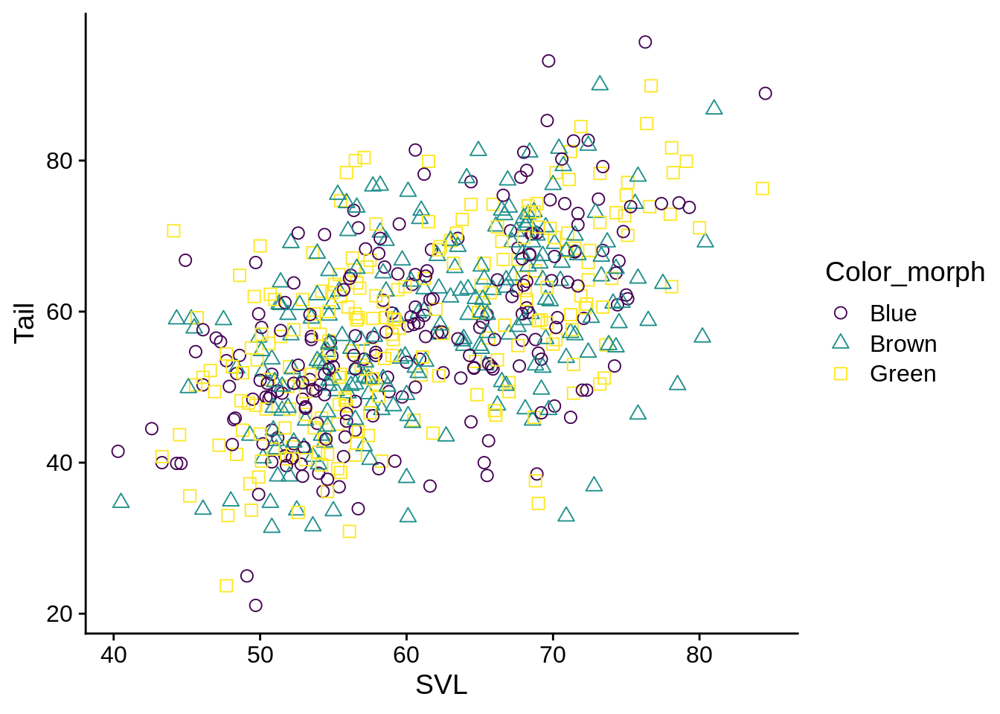
Or to use different aesthetics with different variables to explore different variable combinations
base_plot + aes(color = Limb, shape = Color_morph) +
scale_shape(solid = FALSE) +
scale_color_viridis_c()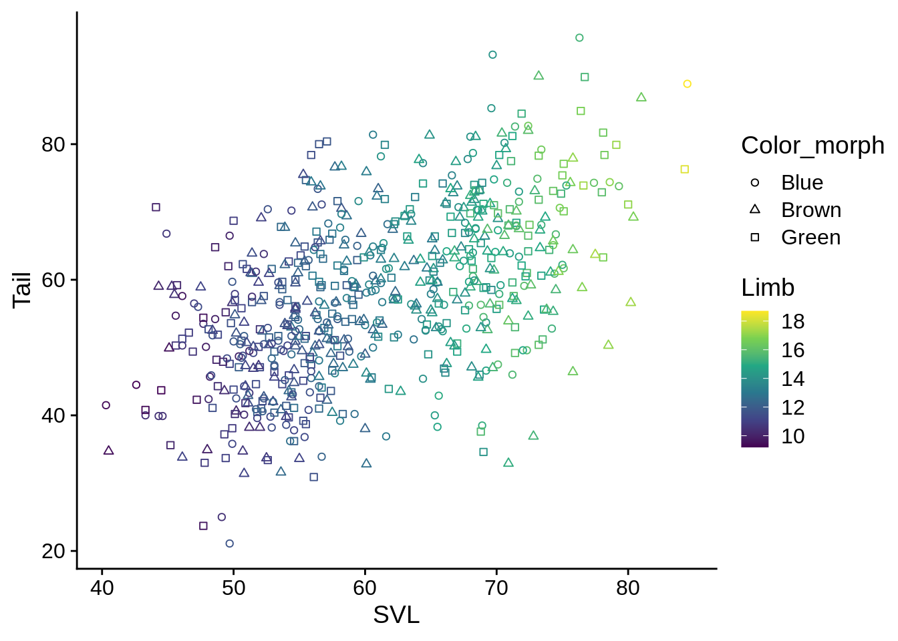
B.3 Geometry
Geometry layers are different ways to visualize your data (primarly along the x and y aesthetics); different types of geom_* objects are suitable to different types of x and y data.
B.3.1 Continuous X, no Y
Histograms:
ggplot(data = lizards) +
aes(x = Diameter) +
geom_histogram()## `stat_bin()` using `bins = 30`. Pick better value with `binwidth`.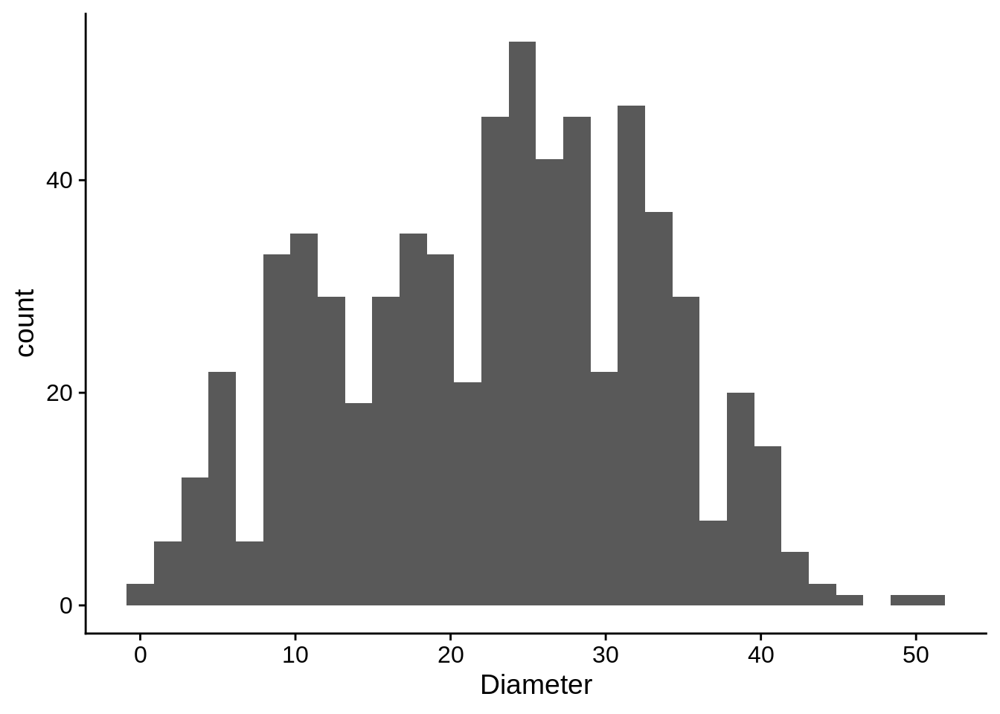
Note that this generates a warning. R automatically assigns the data into bins. To remove the warning, povide the binwidth argument.
ggplot(data = lizards) +
aes(x = Diameter) +
geom_histogram(binwidth = 2.5,
color = "black", fill = "white") 
Note that we used the color and fill aesthetics; for solid objects (like bars), color refers to the outline and fill refers to the solid color.
Density Plots do something similar, but with a smooth estimate.
ggplot(data = lizards) +
aes(x = Diameter) +
geom_density()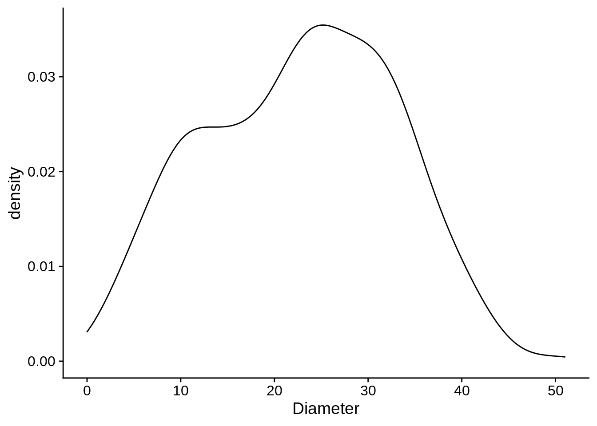
If you wanted to separate the density estimates by color morph, all you'd need to do is add that aesthetic.
ggplot(data = lizards) +
aes(x = Diameter, color = Color_morph) +
geom_density()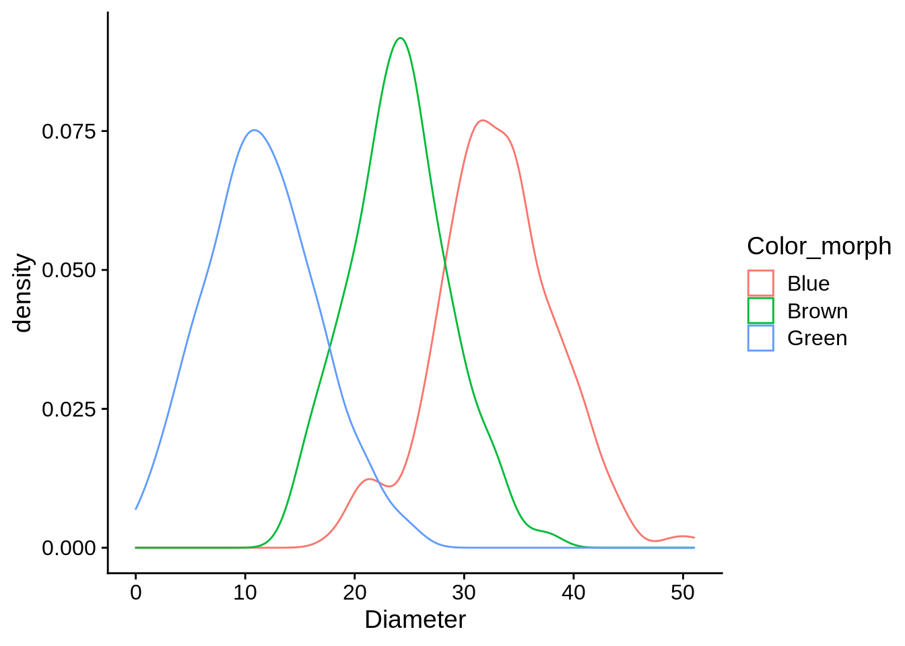 Challenge: How would you do the same with a histogram?
B.3.2 Discrete X, continuous Y
Boxplots: these show the quartile distributions of datasets. Let's compare perch height distribution at each site:
box_plots <- ggplot(data = lizards) +
aes(x = Site, y = Height) +
geom_boxplot()
box_plots
Now let's break that down by color morph
box_plots +
aes(fill = Color_morph) + # We're using fill because boxplots are solid
theme(legend.position = "bottom") # Move the legend to the bottom to give us more room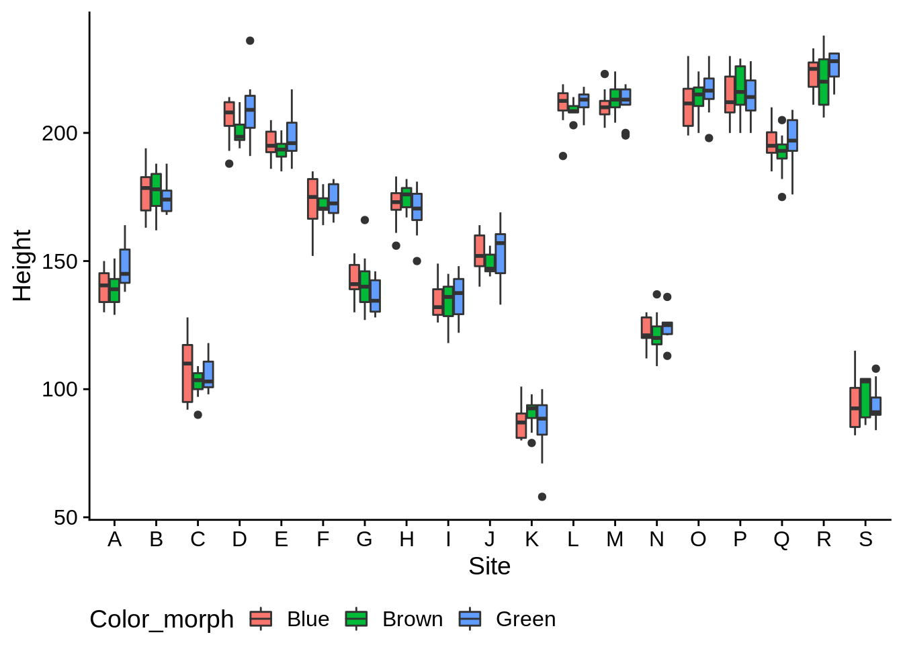
Violin plots are similar to density plots, but are more effective at comparing several groups.
ggplot(data = lizards) +
aes(x = Site, y = Height) +
geom_violin() 
Jitter plots show individual data points for discrete groups; they add a bit of random noise to each x and y to prevent points from overlapping; the width and height arguments control how much in each direction. In this case, we only want jitter along the x.
ggplot(data = lizards) +
aes(x = Site, y = Height) +
geom_jitter(width = .25, height = 0)
An alternate to the jitter plot is provided by geom_sina in the ggforce package (you'll need to install it to make this work). This jitters the points on the x axis so they'll fit within a violin plot.
# install.packages("ggforce") # Uncomment this to install
library(ggforce)
ggplot(data = lizards) +
aes(x = Site, y = Height) +
geom_violin() +
geom_sina(color = "grey30", fill = "grey70", shape = 21) # Note that shape 21 uses both color a fill as aesthetics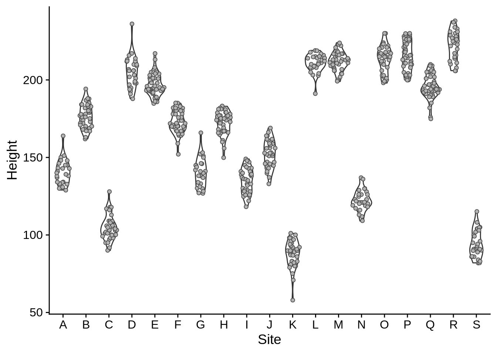
Note that we've included two geom_* layers here, and that the one that was called second (geom_sina) was plotted on top of the one called first.
Sometimes, you'll want to show means & confidence intervals of your different groups. If possible, it's helpful to put those in the context of the raw data. The below plot looks at differences in perch diameter among colors, with the raw data in grey and the means in black. The error bars (geom_errorbar) take aesthetics ymin and ymax, which indicate their range. We used plus & minus 1.96 standard errors because that's the definition of a 95% confidence interval for normally distributed data. Be sure to tell your reader/audience what an error bar represents in your figure captions.
# We need to create a new data frame for mean & standard error of perch diameter
# This uses dplyr commands, which are explained in the next appendix
diameter_mean_se = lizards %>%
group_by(Color_morph) %>%
summarize(
Diameter_se = sd(Diameter) / sqrt(n()), # Standard error
Diameter = mean(Diameter)) # This mean diameter
ggplot(lizards) +
aes(x = Color_morph, y = Diameter) +
# Show the raw data (from the lizards data frame)
geom_sina(, color = "grey60") +
# Show the Mean +/- 95% confidence interval
geom_errorbar(
# 95% CI is the mean diamter +/- 1.96 * se
aes(ymin = Diameter - 1.96 * Diameter_se,
ymax = Diameter + 1.96 * Diameter_se),
color = "black",
width = .3, # How wide the error bars are
data = diameter_mean_se # Use the summary data frame instead of lizards
# The column names should match with the global aesthetics (in this case, x and y)
) +
geom_point(color = "black", size = 2,
data = diameter_mean_se
# This one also uses the summary data frame
# It keeps the global aesthetics, which match
# the color morph & mean value
)
In this example, we've also used two data frames in the plot. This can be useful if you're combining two different types of data (such as raw & summary, or individual & site-level). The important thing to remember is that any columns named in the global aesthetics (defined by an aes() call that isn't inside a geom_*) must be present in both data frames. In this case, those aesthetics are Color_morph and Diameter. Diameter_se is a local aesthetic (in geom_errorbar), so it doesn't need to appear in all datasets.
B.3.3 Continuous X and Y
We've already seen geom_point used for continuous data. Here are a few other options:
Heatmap: this is sort of a 2-d histogram, where the data is divided into bins along both the x and y axis; the fill indicates how many data points fall into that region. This is helpful if you have a lot of points that are all overlapping in the same area.
ggplot(lizards) +
aes(x = SVL, y = Tail) +
geom_bin2d(bins = 25) +
scale_fill_viridis_c()
It's often helpful to add regression lines to scatterpoint plots. This shows the the Tail ~ SVL regression, with the shaded region indicating the standard errors.
regression_plot = ggplot(data = lizards) +
aes(x = SVL, y = Tail) +
geom_smooth(method = "lm", se = TRUE) + # method = "lm" uses a linear regression
# use se = FALSE to disable error regions
geom_point()
regression_plot 
You can also fit a regression to different groups of the data. This fits a separate one for each color:
ggplot(data = lizards) +
aes(x = SVL, y = Tail, color = Color_morph) +
geom_smooth(method = "lm", se = TRUE) +
geom_point() +
scale_color_viridis_d()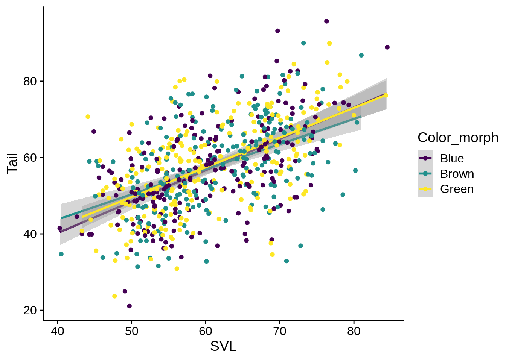
Given that these regression lines all seem to be mostly the same, it may be better to fit them as one, but still indicate the different color morphs of the individual fits. You can specify certain aesthetics that only apply to a single geometric layer by including an aes() statement inside the geom_* call.
ggplot(data = lizards) +
aes(x = SVL, y = Tail) +
geom_smooth(method = "lm", se = TRUE) +
geom_point(aes(color = Color_morph)) + # call color here to only make it apply to points
scale_color_viridis_d()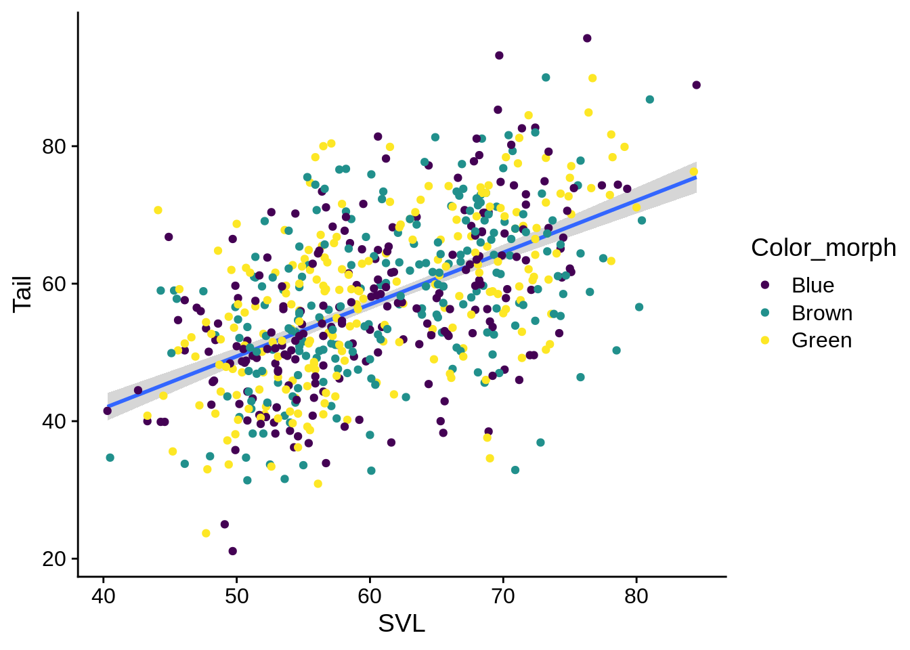
B.3.4 Time series data
If your x variable is related to time (or date), you'll probably want to use a line plot to visualize it. Our anole dataset doesn't work for this, so you'll need to save this as "example_data/beavers.csv". This data has info on the body temperature of two beavers over time.
beavers = read_csv("example_data/beavers.csv")##
## Column specification
## cols(
## Time = col_datetime(format = ""),
## Temperature = col_double(),
## activ = col_double(),
## beaver = col_character()
## )ggplot(beavers) +
aes(x = Time, y = Temperature, color = beaver) +
geom_line() +
scale_x_datetime(date_labels = "%H:%M") # This tells R that you've got a time on the x axis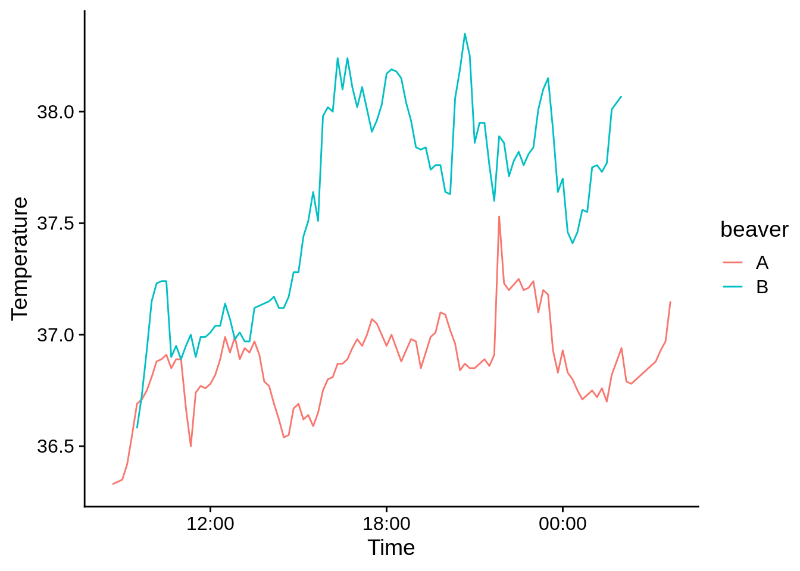
# date_labels says to use hours:minutes as the axis formatB.3.5 Discrete X and Y
Bar graphs are good for showing counts, frequencies, and proportions. This shows how many individual lizards were in each site; It works by counting the number of rows in which the Site column has each value.
ggplot(data = lizards) +
aes(x = Site) +
geom_bar()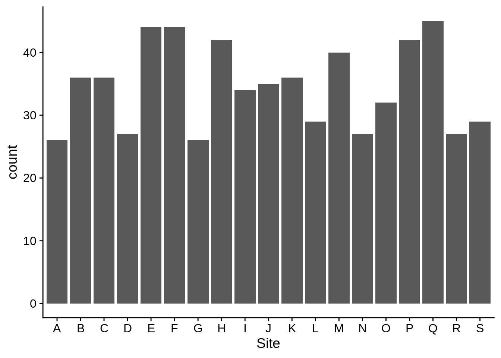
If you use a grouping aesthetic, you'll get a stacked bar plot by default:
ggplot(data = lizards) +
aes(x = Site, fill = Perch_type) +
geom_bar() +
scale_fill_viridis_d()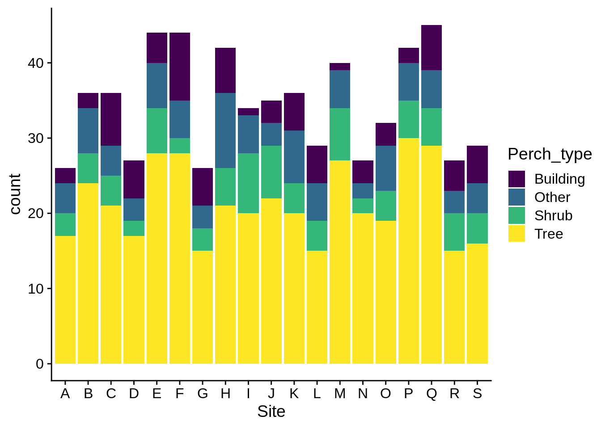
Sometimes, stacking can be hard to interpret; you can have your categories lined next to each other by specifying the bar position as dodge:
ggplot(data = lizards) +
aes(x = Site, fill = Perch_type) +
geom_bar(position = "dodge") +
scale_fill_viridis_d()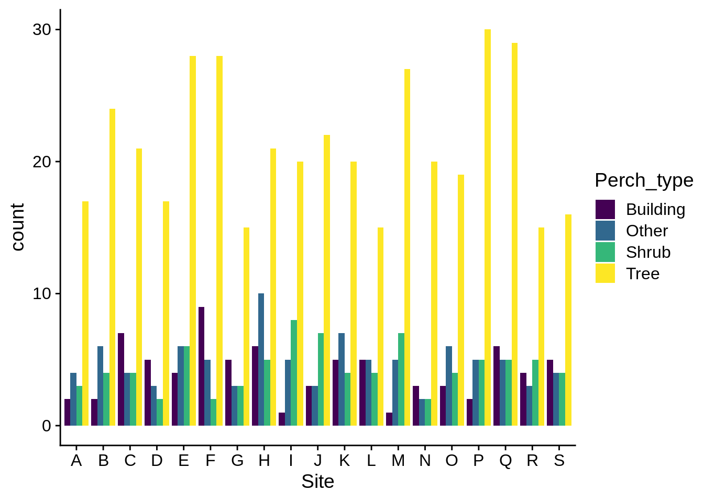
It's usually a good idea to have your bars ordered in a descending frequency; you can do this by using fct_infreq() in your aes() statement.
ggplot(data = lizards) +
aes(x = fct_infreq(Site), # Note how this changes the axis label
fill = Perch_type) + # We'll talk about how to fix that in a bit
geom_bar()
If you wish to use frequencies instead of counts along the y axis, it's usually a better idea to calculate them yourself and display those numbers. You can use geom_col() for these displays; it's like geom_bar(), but it takes a user-suplied y aesthetic.
# This code uses dplyr, which is discussed in the next appendix. Don't worry if it doesn't make sense now.
# Overal perch_height frequency
lizard_perch_freq = lizards %>%
group_by(Perch_type) %>%
summarize(count = n()) %>%
# calculate frequencies per-group
mutate(frequency = count/sum(count)) %>%
# sort by frequency
arrange(desc(frequency)) %>%
# tell ggplot to plot Perch_type in its current order
mutate(Perch_type = fct_inorder(Perch_type))## `summarise()` ungrouping output (override with `.groups` argument)# feel free to use View() to look at this
ggplot(lizard_perch_freq) +
aes(x = Perch_type, y = frequency) +
geom_col()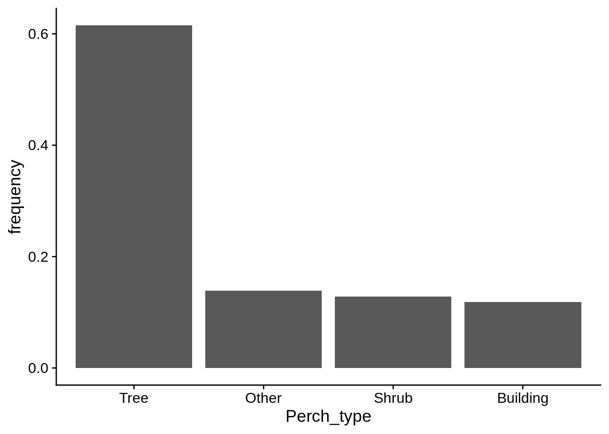
B.4 Facets
You can use facets to make multi-panel figures. This can highlight differences between groups if including them in the same panel is too busy or messy. Let's start by taking our previous regression plot and separating it by color morph.
regression_plot +
facet_wrap(~Color_morph) # note the ~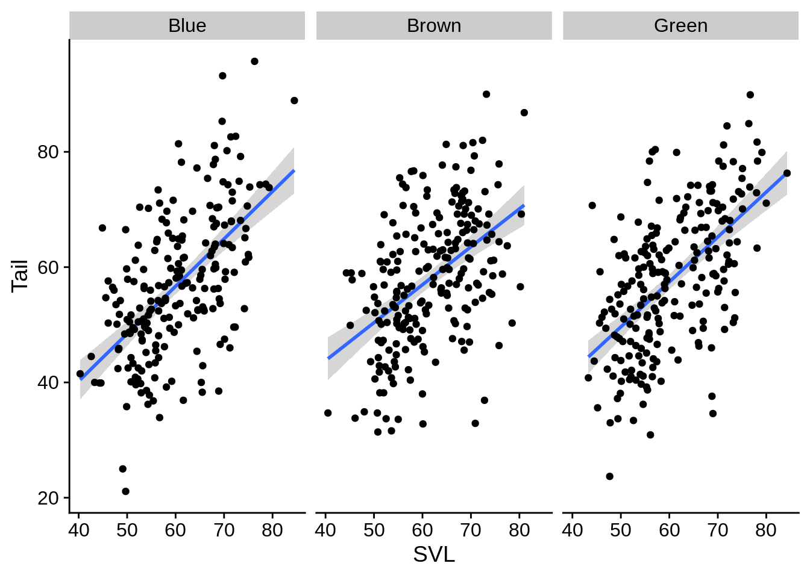
It doesn't look like there's much there. What about faceting by site?
regression_plot +
facet_wrap(~Site) # note the ~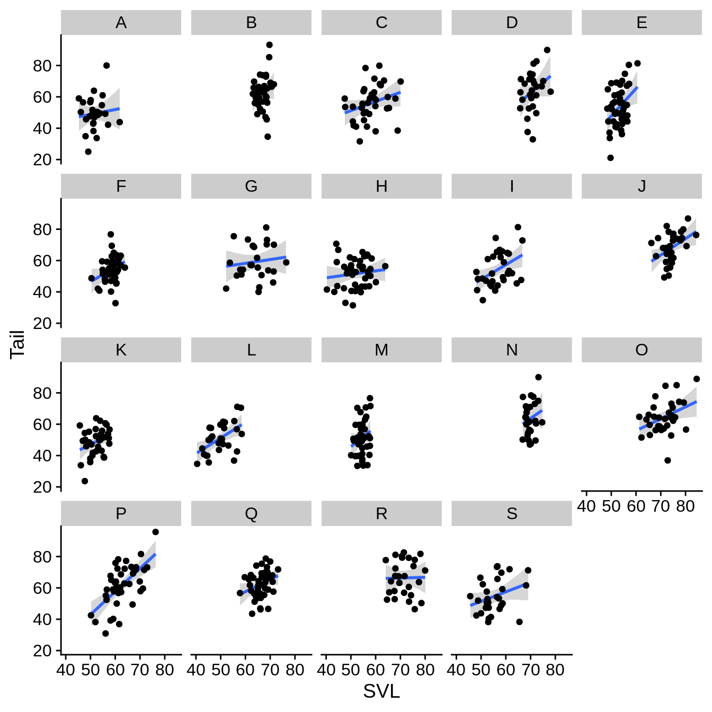
In this case, it looks like the data ranges are quite a bit different among the sites. This leads to a large amount of unused space. You may wish to remove this whitespace.
regression_plot +
facet_wrap(~Site, scales = "free_x") # scales can also be 'free_y' or 'free' (which does both x and y)
You can also facet by two variables into rows & columns with facet_grid().
regression_plot +
facet_grid(Perch_type~Color_morph) # rows ~ columns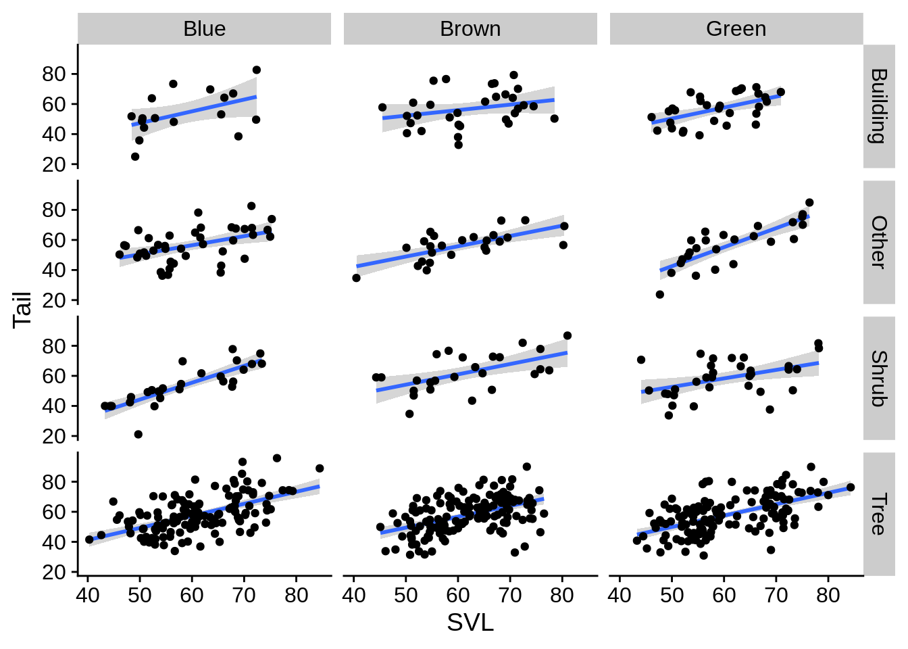
B.5 Changing the theme, axis titles, & other visual elements
By default, ggplot will name your axis labels & legends by whatever you put in the aes string. You may wish to change that. For example, the labels on this plot could be improved:
ggplot(lizards) +
aes(x = Limb, y = Diameter, color = Color_morph) +
geom_point() +
scale_color_viridis_d()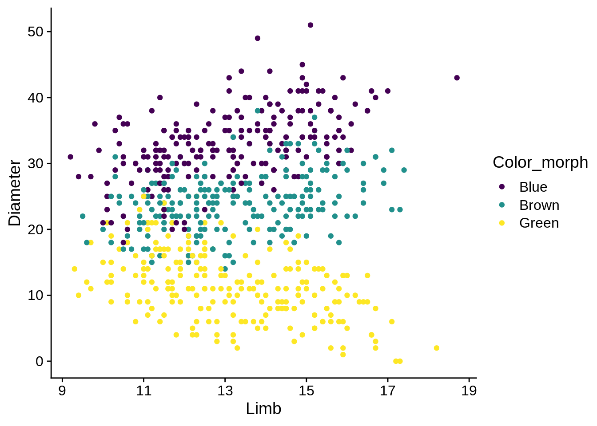
The xlab() and ylab() commands can provide labels for their respective axes, while the name argument can re-label scales.
ggplot(lizards) +
aes(x = Limb, y = Diameter, color = Color_morph) +
geom_point() +
scale_color_viridis_d(name = "Color Morph") +
xlab("Hind Limb Length (mm)") +
ylab("Perch Diameter (mm)")
More complicated options involve tweaking the theme. I'm not going to get into this right now, but I may update this later if conditions call for it. There is an example of using it to move the legend position several sections ago.
B.6 More references
You can find a cheatsheet for ggplot2 in RStudio under Help -> Cheatsheets; this covers most of the basic functions. The official website has a full list of geoms, scales, aesthetics, theme options, and everything else; it's a more developed version of R's built-in help mechanism. R for Data Science has a chapter on ggplot2 that is also quite helpful. Finally, it's worth looking at the Figures chapter of this book for more examples; the code used to make those figures is linked at the bottom of the chapter.